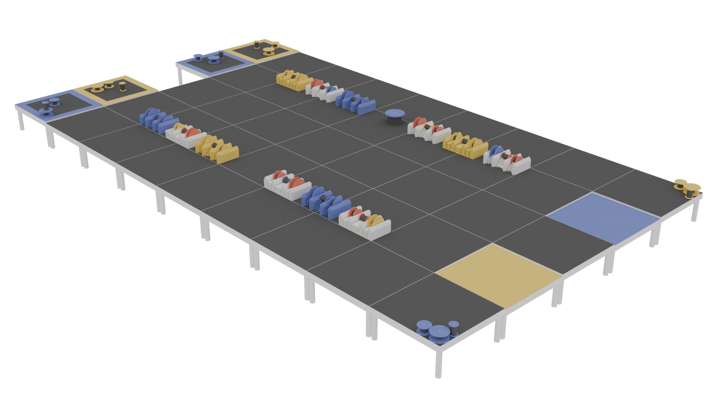
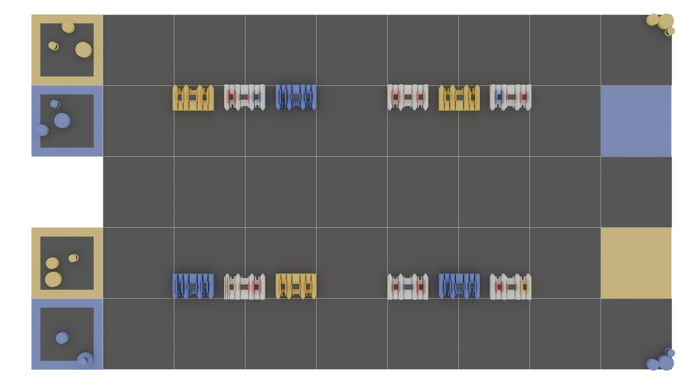

Qu'est-ce que Robotique CRC
Qu'en est-il de la compétition
La compétions de robotique CRC comporte plusieurs aspects. D’abord, il faut comprendre que la compétition s’étend sur environ 4 mois. Durant cette période, les différentes écoles qui y participent doivent :
- Créer un robot
- Créer une vidéo
- Monter un kiosque
- Faire un tutoriel
- Construire un robot
Puis, pour une durée de 3 jours, les différentes écoles se rassemblent pour affronter leur robot, présenter leur kiosque et participer à une compétition de programmation.
LE JEU
But du jeu
Le but du jeu est d’amasser le plus de points possible en accomplissant différentes tâches avec le robot sur le terrain de jeu. Chaque tâche réussie rapporte un certain nombre de points, et l’équipe avec le plus de points à la fin du match remporte la victoire.
Le terrain de jeu
Le terrain de jeu comporte 6 stations de réparation, ainsi que 3 moteurs pour chaque équipe pour une total de 6 moteurs. Il y a aussi une zone de pièces supplémentaires pour chacune des équipes à l'extrémité du terrain.


Les pièces de jeu
Dans le jeu, il existe trois types de pièces:

Ventilateur

Coeur

Turbine
Les stations
Il y a deux types de stations sur le terrain de jeu : les moteurs et les stations de réparation. Ceux-ci peuvent contenir trois pièces qui correspondent aux trois types de pièces du jeu.
Les moteurs
Les moteurs rapportent des points selon le nombre de pièces de la couleur de l’équipe qui y sont placées :
- 1 pièce : 50 points
- 2 pièces : 100 points
- 3 pièces : 250 points
Les stations de réparation
Elles permettent d’échanger une pièce neutre (rouge) contre une pièce de la couleur de l’équipe. Cela aide à obtenir plus de pièces à placer dans les moteurs ou dans la zone de pièces supplémentaires.
Les zones de pièces supplémentaires
Chaque pièce placée dans cette zone rapporte 40 points supplémentaires.
Les bonus
Un aspect qui très important dans le jeu est la présence de 2 bonus. Ces bonus se rapportent tous les deux à la zone de pièce supplémentaire :
- Bonus de hauteur : L’équipe qui a la tour de pièce la plus haute se voit attribuer un bonus de +60%.
- Bonus de quantité : L’équipe qui a le plus de pièces dans la zone supplémentaireobtient un bonus de +40%.